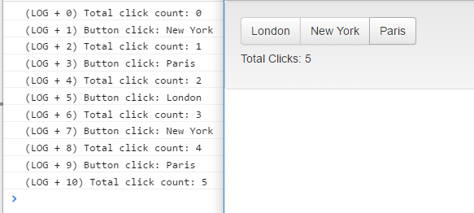

angularjs入门笔记-19-模块与服务协作
模块和服务在ng中到底扮演着什么角色，应该如何使用，而这两者又有什么联系？
- 扩展已存在的模块或创建新模块将应用分为多个文件
- 使用Module.factory创建服务来定义对象
- 使用Module.service创建服务定义构造器，通过提供器创建可配置的服务
模块在ng中有两个角色，一是使用ng-app指令定义应用于HTML元素中的应用的功能，定义模块是ng开发的起点。第二是使用模块定义功能，比如服务，指令和过滤器，使之在不同的应用中某种成都上易于重用，即能跨多个应用使用。
服务用于在应用中封装需要重用的功能，这不完全适合MVC模式。服务通过实现横切关注点（cross-cutting-concerns），这对于影响多个组件或多个组件影响的所有功能的统称。比如典型的有日志、安全、联网，它们不是模块的一部分，不属于控制器，因为在模块中没有影响用户交互或执行操作，他们也不是视图或指令的一部分，因为它们不能为用户呈现模型，总之，若不使用其他方法创建新功能，就使用服务吧。
横切关注点指的是一些具有横越多个模块的行为，传统的开发方法不能有效的模块话这种行为
###模块
在实际项目中，代码和标签并不是仅在单个HTML文件中，那样会使应用变得笨拙，同时难以多人协同开发，解决的方案是分离应用的组件到单个文件中，并使用script元素在主html文件中引用那些文件。
同时，使用统一的方式命名并组织文件可以让项目更合理，一般按类型将组件分类（比如控制器是一类，指令是一类）或（用户管理组件一类，内容管理组件是一类）1
2
3
4
5
6
7
8
9
10
11
12
13
14
15// directives.js
angular.module("customDirectives", ["customServices"])
.directive("triButton", function (logService) {
return {
scope: { counter: "=counter" },
link: function (scope, element, attrs) {
element.on("click", function (event) {
logService.log("Button click: " + event.target.innerText);
scope.$apply(function () {
scope.counter++;
});
});
}
}
});
注意在创建指令时声明了对customServices模块的依赖，同时在工厂函数中参数指定了对logService的服务的依赖，使用将在后面看到。
###服务
ng中有三个方法定义服务，factory、service和provider，这些方法的效果是一样的（即能创建在整个ng应用中提供功能的服务对象），但是每个方法的创建和管理服务对象的方式不一样。
####factory
创建服务最简单的方法是使用Module.factory方法，传入服务名称和factory函数作为参数，返回服务对象。1
2
3
4
5
6
7
8
9
10// services.js
angular.module("customServices", [])
.factory("logService", function () {
var messageCount = 0;
return {
log: function (msg) {
console.log("(LOG + " + messageCount++ + ") " + msg);
}
};
});
上述代码创建了一个新模块customServices并调用factory方法创建了服务logService，在工厂函数中定义log函数对象，它接收消息作为参数写入控制台。
通过工厂函数返回的对象就是服务对象，且每当logService被请求，该服务对象都将被ng调用。工厂函数仅被调用一次，因为该对象创建和返回时使用的服务在应用中是必不可少的。
常见错误是假定服务的每个调用者都接到不同的服务对象，并且认为计数器变量会每次调用重新计算，同时需要注意重复使用服务名称会覆盖同名服务。
1 | <html ng-app="exampleApp"> |

使用logService服务比直接在代码中写console.log()的好处有如下几点：
- 可以在service.js中注释一行以达到对整个应用的修改
- 服务调用者无需深究其实现，即可以彻底改变日志记录被执行的方式而无需对服务对象以外做任何改变
- 可以从应用中隔离并单独测试服务的功能
- 服务能构建通用功能而无需打破MVC模式
####Service
当ng需要满足由factory方法定义的服务的依赖关系时，使用工程函数返回对象很简单，但若需要ng使用工厂函数返回的对象用new关键字（如构造器一样）来创建服务对象呢？则需要service方法定义服务。
如下service方法完成如factory一样的工作，并扩展了一个errorService服务：1
2
3
4
5
6
7
8
9
10
11
12
13
14
15
16
17
18var baseLogger = function () {
this.messageCount = 0;
this.log = function (msg) {
console.log(this.msgType + ": " + (this.messageCount++) + " " + msg);
}
};
var debugLogger = function () { };
debugLogger.prototype = new baseLogger();
debugLogger.prototype.msgType = "Debug";
var errorLogger = function () { };
errorLogger.prototype = new baseLogger();
errorLogger.prototype.msgType = "Error";
angular.module("customServices", [])
.service("logService", debugLogger)
.service("errorService", errorLogger);
首先做的是创建构造函数baseLogger，实际上是为了定义了一个基类，debugLogger继承自baseLogger,同时设置msgType为Debug. new关键字创建新的对象并将属性和由构造函数所定义的函数复制到新对象中。
使用构造器的目的是，在基类中定义功能，然后将它派生出多种不同的子类。
上面的service方法除了接收一个字符串作为服务名，第二个参数为一个构造器。
service中不是一定要显式使用原型的，如下也可以达到目的：1
2
3
4
5
6
7
8
9angular.module("customServices", [])
.service("logService", function () {
return {
messageCount: 0,
log: function (msg) {
console.log("Debug: " + (this.messageCount++) + " " + msg);
}
};
});
但ng仍然会在背后使用new创建这个服务对象，所以推荐使用原型。
####Provider
Provider可以看作是提供了更“底层”的方法创建服务，即通过配置的方法能更多的控制被创建的服务对象。1
2
3
4
5
6
7
8
9
10
11
12
13angular.module("customServices", [])
.provider("logService", function() {
return {
$get: function () {
return {
messageCount: 0,
log: function (msg) {
console.log("(LOG + " + this.messageCount++ + ") " + msg);
}
};
}
}
});
provider方法的参数是服务名和工厂函数，而这个工厂函数必须返回一个对象，被成为provider对象（与provider方法不同）,并且该对象必须有一个$get方法，该方法返回真正的服务对象。
当需要该服务时，ng将调用factory方法去获得这个provider对象，然后调用$get方法获取服务对象。
使用provider方法并不会改变服务的使用方法，但是使用provider方法的优点是可以为provider方法添加功能，用于配置服务对象，如下：1
2
3
4
5
6
7
8
9
10
11
12
13
14
15
16
17
18
19
20
21
22
23
24
25
26
27
28
29
30
31
32
33
34
35angular.module("customServices", [])
.provider("logService", function () {
var counter = true;
var debug = true;
return {
messageCounterEnabled: function (setting) {
if (angular.isDefined(setting)) {
counter = setting;
return this;
} else {
return counter;
}
},
debugEnabled: function(setting) {
if (angular.isDefined(setting)) {
debug = setting;
return this;
} else {
return debug;
}
},
$get: function () {
return {
messageCount: 0,
log: function (msg) {
if (debug) {
console.log("(LOG"
+ (counter ? " + " + this.messageCount++ + ") " : ") ")
+ msg);
}
}
};
}
}
});
上面在provider对象中添加了2个函数，一个用以控制是否启用计算器，另一个用以控制是否启用日志功能。
注意，一般这些配置函数会检查参数，当提供参数时则表示设置，而没有参数时则表示查询，同时为了使多个配置函数可链式调用，设置参数时返回provider对象作为结果。
ng中provider对象也适用于依赖注入，获得和使用provider对象的一般方法是传入Module.config方法的函数参数列表中，声明对这些provider对象的依赖，以服务名Provider的形式注入依赖（为了与普通的服务做区分）。1
2
3
4angular.module("exampleApp", ["customDirectives", "customServices"])
.config(function (logServiceProvider) {
logServiceProvider.debugEnabled(true).messageCounterEnabled(false);
})
用config方法配置服务不是必须的，但是最好这样做，因为服务对象都是单例的，一旦对其做出改变，所有组件都受影响，所以最好统一配置。
内置模块和服务
ng内置了非常非常多的模块和服务，所以绝大多数情况下，我们需要做的是合理使用并组合这些内置功能即可（按字母排序）。
- $anchorScroll 滚动浏览器窗口至指定锚点
- $animate 使用动画
- $compile 处理一个HTML片段以创建可被用于生成内容的函数
- $controller 封装$injector服务封装的实例化控制器
- $document 提供jqLite对象
- $exceptionHandler 处理异常
- $filter 提供过滤器入口
- $http 创建并管理ajax请求
- $injector 创建ng组件实例
- $interpolate 处理字符串，包括绑定表达式创建可被用于生成内容的函数
- $interval 对浏览器标准setInterval的增强封装
- $location 对浏览器标准location对象的封装
- $log 对浏览器console对象的封装
- $parse 处理表达式并创建可用于生成内容的函数
- $provide 许多Module暴露方法的实现
- $q 提供deferred对象/promises
- $resource 对他RESTfulAPI运作的支持
- $rootElement DOM根元素
- $rootScope 顶级作用域
- $route 基于URL的视图更新功能
- $routeParams URL路由信息
- $sanitize 将HTML中部分不安全字符转码
- $sce 过滤HTML字符串中危险的元素和属性
- $swipe 识别单击手势
- $timeout 对浏览器标准setTimeout的增强封装
- $window 浏览器window对象